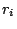

58. Alignment of Promoter
Regions by Mapping Nucleotide Sequences into Arrays of
Transcription Factors Binding Motifs
E. Blanco |
X. Messeguer |
R. Guigó |
| eblanco@imim.es |
peypoch@lsi.upc.es |
rguigo@imim.es |
1: Grup de Recerca en Informàtica Biomèdica.
Institut Municipal d'Investigació Medica / Universitat
Pompeu Fabra / Centre de Regulació Genòmica. Pg.
Maritim de la Barceloneta 37-49, 08003 Barcelona, Spain. 2:
Grup d'algorísmica i genètica. Departament de
Llenguatges i Sistemes Informàtics. Universitat
Politècnica de Catalunya. C/ Jordi Girona, 1-3, 08034
Barcelona, Spain.  : Corresponding
author.
: Corresponding
author.
Keywords: Sequence
analysis, dynamic programming, comparative genomics, gene
expression.
We address the problem of comparing
promoter regions from genes with similar expression patterns (e.g.
homologous genes, [1]).
Similarity in gene expression may not be reflected in sequence
similarity in promoter regions which partially would explain the
limited sucess of currently available computational methods for
promoter prediction ([2]). In
the approach described here, we attempt to overcome such a
limitation representing a (potential) promoter region as a sequence
in a new alphabet in which the different symbols denote different
Transcription Factors. Thus, a promoter can be translated into a
sequence of pairs containing the factor potentially binding to a
motif and the associated position on the nucleotide sequence.
Sequences in this new alphabet can be aligned. If the scoring model
takes into account not only the presence/absence of a given symbol,
but its relative position on the primary sequence as well, the
optimal alignment between the promoter regions of two similarly
expressed genes may reflect the underlying common configuration of
binding motifs.
To obtain the optimal alignment
between two sequences  and
and  in the new alphabet, we introduce a dynamic programming
algorithm similar to a method initially developed to compare
enzyme restriction maps, [3]. Elements
in the new alphabet, we introduce a dynamic programming
algorithm similar to a method initially developed to compare
enzyme restriction maps, [3]. Elements
 in and
in and
 in are said to match if and only if
in are said to match if and only if  (the same TF). The optimal global alignment
ending at match
(the same TF). The optimal global alignment
ending at match
 is computed, then,
according to the following recurrence:
is computed, then,
according to the following recurrence:
][c] if  =  then then

otherwise

Initialization:

|
where  and
and  are two parameters to
control the length and the compactness of the final alignment.
If and contain
are two parameters to
control the length and the compactness of the final alignment.
If and contain
 elements, the cost of the algorithm is
elements, the cost of the algorithm is
 . Because of the matrix is
quite sparse, the final cost can be rewritten in terms of the
number of matching positions between both lists
. Because of the matrix is
quite sparse, the final cost can be rewritten in terms of the
number of matching positions between both lists  as
as  .
.
Figure: Alignment of the promoter regions from the homologues
HUMHBBAG and BOVHBB of the
A-gamma-hemoglobin gene.
|
|
Figure: Graphical representation of the TF sites predicted by the
program MatInspector ([4])
and the results of the alignment along the human and mouse
promoters of the gene PS-PLA1.
|
|
- 1
- Dermitzakis, E.T. and Clark, A.G. 2002. Evolution of
transcription factor binding sites in mammalian gene regulatory
regions: conservation and turnover. Molecular Biology and
Evolution 19:1114-1121.
- 2
- Fickett, J.W. and Wasserman, W.W. 2000. Discovery and modelling
of transcription regulatory regions. Current opinion in
Biotechnology 11:19-24.
- 3
- Waterman, M.S., Smith T.F. and Katcher, H.L. 1984. Algorithms
for restriction map comparisons. Nucleic Acids Research
12:237-242.
- 4
- Quandt, K., Frech, K., Karas, H., Wingender, E. and Werner, T.
1995. MatInd and MatInspector: new fast and versatile tools for
detection of consensus matches in nucleotide sequence data.
Nucleic Acids Research 23:4878-4884.
2003-04-07
![\scalebox{0.96}[0.7]{ \includegraphics[bb=131 321 463 527]{poster-03-058-fig02.ps}}](img24.png)